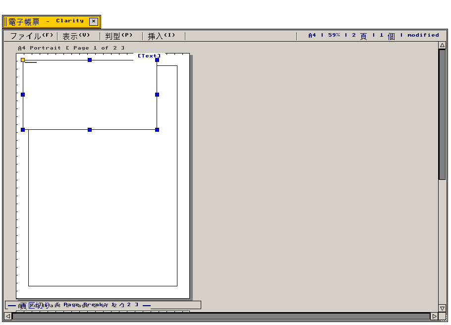
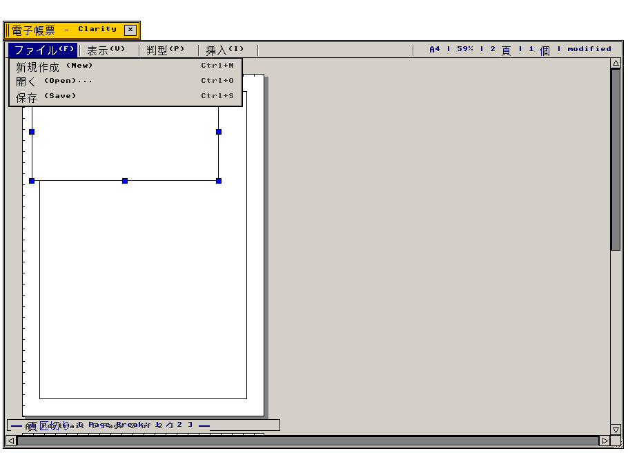

電子帳票 (Clarity)
DTP組版エンジン · 伝統和紙判型 · チベットPecha · TeX数理組版 · 縦書き
DTP出版組版環境、和式伝統14判型、チベット横長Pecha
"Professional DTP publishing compositor: authentic Japanese legacy paper formats, Tibetan horizontal Pecha loose-leaf geometry."
← アプリケーション一覧 (Applications Index)
電子帳票（Clarity） — B-Systemにおける高度出版・帳票組版環境。キャビネットTAD動的集約、和装本縦書き、チベット横長Pecha、TeX数式組版を統括するコンポジター仕様。
"Publishing layout engine orchestrating dynamic TAD asset aggregation, vertical East-Asian typesetting, sacred Tibetan Pecha margins, and camera-ready PDF export."
画面プレビュー (Screen Preview)

実機描画フレームバッファより自動抽出されたClarity電子帳票DTPウィンドウ (A4・四六判・Pecha三判型対応)

実機描画フレームバッファより自動抽出されたClarity判型選択メニュー展開画面 (Format Menu Opened)
概要 (Overview)
クラリティ（src/apps/clarity.c, src/apps/clarity_tex.c）は、QuarkXPressやInDesign水準の組版機能を純C99で実装したDTP出版環境です。キャビネット内の原稿・表計算・作図実身を紙面上へリアルタイム連動させる動的集約機構に加え、東洋文化圏の伝統出版文化を保全する「日本固有伝統14判型（縦書き和装本）」および「チベットPecha（དཔེ་ཆ་）横長経典」を第一級組版規格として標準実装しています。
"Clarity integrates professional DTP composition with cultural publishing preservation: native East-Asian vertical typography and Tibetan loose-leaf woodblock manuscripts."
基本操作体系 (Operational Specifications)：
・[ファイル (File)]：新規組版帳票作成、TAD原稿リンク、PostScript/PDF出力、トンボ付きCMYK分版。
・[判型 (Format)]：近代国際規格（A/B判）および日本伝統14判型（美濃判・半紙・四六判・短冊・和装本等）の選択。
・[Pecha (དཔེ་ཆ་)]：チベット横長経典モード（デルゲ版・大蔵経判・朱黒二重枠lcags-ri・余白葉番号設定）。
・[数理 (TeX)]：LaTeX数式混植、\pecha、\tategaki組版マクロのリアルタイムレンダリング。
1. DTP組版エンジンとTeX数理組版 (DTP Layout Engine & TeX Integration)
マルチメディアTAD実身の動的集約パイプラインおよびLaTeX数理組版エンジンの動作仕様。
"Dynamic TAD document aggregation architecture, TeX mathematical formula composition, and camera-ready PostScript/PDF export."
| 機能・コンポーネント名 |
動作概要と機能仕様 (Functional Specification) |
技術仕様・C99実装 (C99 Architecture) |
TAD実身動的集約
(Dynamic Asset Linking) |
T-Editor文書、Matrix表計算、Clarity作図などの外部実身を紙面枠へ直接リンク。元データ更新時に紙面を自動再計算。 |
src/apps/clarity.c
実身参照ポインタ: TAD_FUSEN_VOBJ |
TeX数式組版エンジン
(LaTeX Math Compositor) |
インラインおよび別行立て数式（積分、分数、行列等）をピクセル完全な高品質ベクトルグリフとして混植。 |
src/apps/clarity_tex.c
TeX FSM パーサー / 数理テーブル |
高精度縦書き組版
(Vertical Typography) |
右から左への縦書き行送り、ルビ（振り仮名）、割注、縦中横、行取り、禁則処理をミリポイント単位で精密制御。 |
JIS X 4051 日本語組版処理準拠
ミリポイント (mpt) 単位グリッド |
CMYK分版・カメラレディ
(Camera-Ready Export) |
トンボ（Crop marks）、ブリード（裁ち落とし幅 3mm）、CMYK 4色プロセス分版に対応したPostScript/PDFバイナリ生成。 |
PostScript Level 3 / PDF 1.7 出力
CMYK 色分解パイプライン |
2. 日本固有伝統判型仕様 (Native Japanese Legacy Paper Formats)
江戸時代以来の和紙寸法および近代文芸出版における主要14判型の寸法・用途仕様。
"Exhaustive geometric and cultural catalog of 14 traditional Japanese paper standards from historical Mino-ban to Shiroku literary formats."
| 伝統判型 |
規格寸法 (Dimensions) |
用途・出版文化的位置づけ (Cultural & Publishing Purpose) |
| 美濃判 (Mino-ban) |
273 × 394 mm |
江戸時代公用紙・古典籍標準判型。美濃和紙規格であり、歴史的公文書・典籍の最高峰。 |
| 半紙 (Hanshi) |
242 × 333 mm |
和装本・書道・古典草双紙の伝統規格。日本文化で最も広く親しまれた木版刷り用紙。 |
| 四六判 (Shiroku-ban) |
127 × 188 mm |
近代日本文芸単行本・小説の標準規格（美濃判を四六断裁）。格調高い書籍判型。 |
| 菊判 (Kiku-ban) |
150 × 218 mm |
学術専門書、文芸雑誌、評論集、美術書の代表的判型（菊花紋洋紙規格由来）。 |
| 新書判 (Shinsho-ban) |
105 × 173 mm |
教養新書、ノンフィクション、コミックス単行本の黄金比判型。高い可読性と携帯性。 |
| 文庫判 (Bunko-ban) |
105 × 148 mm |
岩波文庫・新潮文庫以来の国民的ポケット文学規格（A6相当）。 |
| 大奉書 (Hōsho-ban) |
394 × 530 mm |
最高級公用文書、宮中令達、浮世絵錦絵の伝統規格。極上の風合いを持つ大判格式紙。 |
| 大福帳 (Daifukuchō-ban) |
160 × 240 mm |
江戸・明治期の商人勘定台帳様式。縦長勘定綴じの伝統的ビジネス記録判型。 |
| 短冊 (Tanzaku-ban) |
60 × 363 mm |
俳句・短歌詠進専用の極細縦長判型。一行〜二行の雅やかな縦書き配置に最適化。 |
| 色紙 (Shikishi-ban) |
242 × 272 mm |
和歌、書画、揮毫、記念贈呈用の正方形に近い格式高い厚紙判型。 |
| 懐紙 (Kaishi-ban) |
145 × 175 mm |
茶道・和歌詠進・礼法に用いられる伝統懐紙寸法。 |
| 折本 (Orihon) |
80 × 260 mm (可変) |
蛇腹（アコーディオン）折りの仏教経典・年表・祝詞集。連続紙面が折り畳まれた装丁。 |
| 巻子本 (Kansubon) |
280 × 1200+ mm |
絵巻物・歴史古文書の巻物形式。水平に広がりながら右から左へ縦書き段落が連続展開。 |
| 和装本・袋綴じ (Fukurotoji) |
180 × 250 mm |
一枚の紙を二つ折りにして外側に折り目を向け、背を四つ目綴じで糸留めする伝統装丁。 |
3. チベット横長Pecha経典組版仕様 (Tibetan Horizontal Pecha Specifications)
チベット仏教大蔵経（Kangyur/Tengyur）およびデルゲ版木版経典の横長非綴じ組版仕様。
"Geometric layouts, ceremonial double borders (lcags-ri), folio indexing, and interlinear root/commentary (mchan-'grel) for Tibetan loose-leaf manuscripts."
| Pecha 規格 |
規格寸法 (Dimensions) |
用途・写本形式 (Manuscript & Woodblock Tradition) |
| Rinchen Terdzö (大蔵経・宝庫判) |
650 × 140 mm |
大宝蔵（リンチェン・テルズ）等、密教大著述・儀軌集の大判長方形木版経典。 |
| Kangyur / Tengyur (標準経典判) |
560 × 110 mm |
デルゲ版・北京版チベット大蔵経の標準寸法。横長非綴じ葉（Loose-Leaf）形式。 |
| Derge Woodblock (デルゲ木版大判) |
700 × 180 mm |
東チベット・デルゲ印経院に伝わる最高峰の大型木版刷り経典寸法。 |
| Pocket Dharma (行者暗誦判) |
320 × 85 mm |
僧侶・修行者が携帯して読誦・暗記するための小型ポータブルPecha判型。 |
4. 出版ワークフロー (Typical Publishing Workflow)
原稿リンクから印刷所入稿用PDF生成までの典型的な出版組版シーケンス。
"Comprehensive multi-cultural publishing pipeline spanning Tibetan Pecha, Japanese vertical novels, and academic TeX documents."
| 出版モード |
組版手順と機能連携 (Workflow Sequence) |
出力形式 (Export Target) |
| チベットPecha組版 |
Pecha Mode（560×110mm）を選択。Cabinetからチベット語TAD原稿をリンクし、朱黒二重枠（lcags-ri）と左余白表題（sna-chen）を適用して木版レイアウトを出力。 |
木版風 PDF / EPS |
| 和装本・文芸組版 |
和装本モード（四六判 縦書き）を選択。T-Editor原稿を流し込み、ルビ・割注・禁則処理を適用してリアルタイムに縦書き段組をプレビュー。 |
四六判 / 袋綴じ PDF |
| 学術TeX論文 |
論文モードでTeX数式（積分・分数・行列）を混植し、Reviewの査読注釈実身（pdf_tad_anno.c）を参考文献として自動連動。 |
学術 PDF / PostScript |
| 印刷所入稿 |
トンボ（Crop marks）および3mm裁ち落とし幅付きの高解像度CMYK分版データをワンクリックで生成。 |
カメラレディ CMYK PDF |
関連コンポーネント (Related Components)